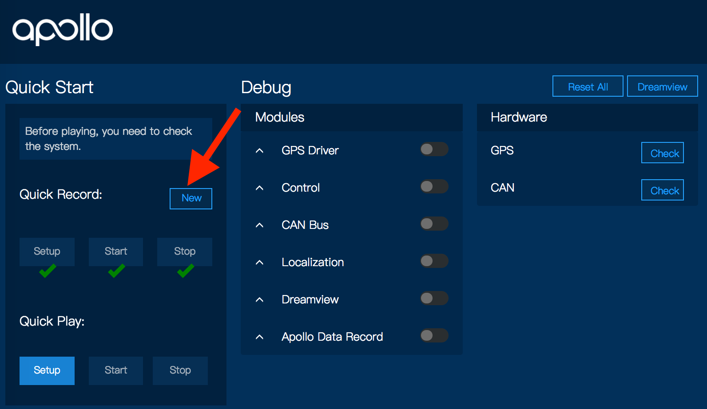
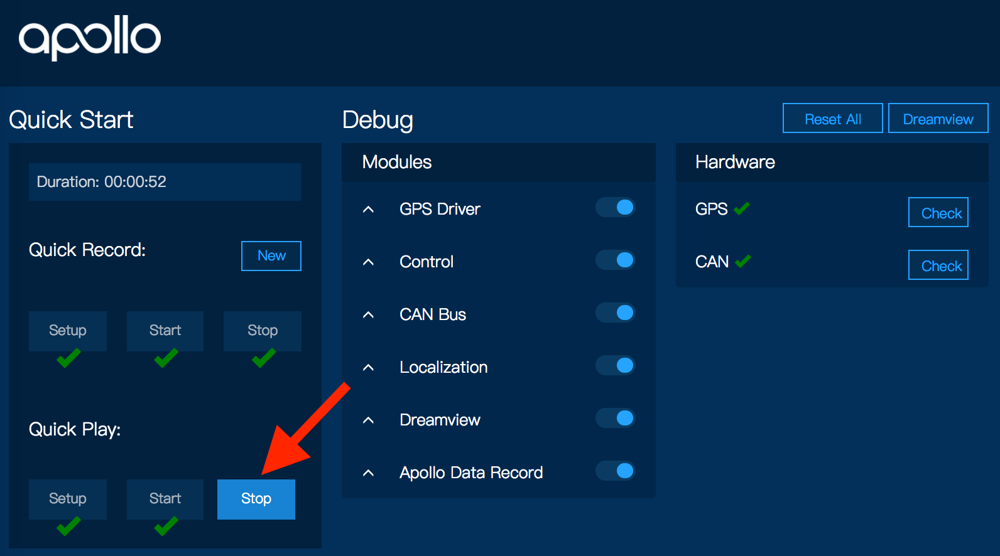

Apollo 1.0 Quick Start Guide¶
Contents¶
About This Guide¶
The Apollo 1.0 Quick Start Guide provides all of the basic instructions to understand, install, and build Apollo.
Document Conventions¶
The following table lists the conventions that are used in this document:
Icon |
Description |
|---|---|
Bold |
Emphasis |
|
Code, typed data |
Italic |
Titles of documents, sections, and headings Terms used |
|
Info Contains information that might be useful. Ignoring the Info icon has no negative consequences. |
|
Tip. Includes helpful hints or a shortcut that might assist you in completing a task. |
|
Online. Provides a link to a particular web site where you can get more information. |
|
Warning. Contains information that must not be ignored or you risk failure when you perform a certain task or step. |

About Apollo 1.0¶
Apollo 1.0, also referred to as the Automatic GPS Waypoint Following, works in an enclosed venue such as a test track or parking lot. It accurately replays a trajectory and the speed of that trajectory that a human driver has traveled in an enclosed, flat area on solid ground.
At this stage of development, Apollo 1.0 cannot perceive obstacles in close proximity, drive on public roads, or drive in areas without GPS signals.
Description of the Vehicle Environment¶
The Lincoln MKZ, enhanced by Autonomous Stuff, provides users with an accessible autonomous vehicle platform. The platform supplies users with a comprehensive stack of hardware and software solutions.
Users gain direct access to vehicle controls such as gear selection, speed, and indicator lights. Software interfaces have been created for steering, braking, acceleration, and gear selection to provide Developers with a workable user interface.
Additional features include:
Power distributor terminals
Integrated PC with ROS pre-installed and configured
Emergency Stop using a drive-by-wire system
Ethernet network and USB connections (to PC)
Hardware Installation¶
Please refer to Apollo 1.0 Hardware and System Installation Guide for the steps to install the hardware components and the system software.
Apollo Software Installation¶
Please refer to Apollo Software Installation Guide.
Run Demo on Vehicle¶
This section provides the instructions to run the Apollo 1.0 Demo on Vehicle.
Set up the hardware:
Power-on the platform vehicle.
Power-on the Industrial PC (IPC).

Power-on the modem by pressing and holding the power button until the lights turn on.
Set up the network configuration for the IPC: static IP (for example, 192.168.10.6), subnet mask (for example, 255.255.255.0), and gateway (for example, 192.168.10.1)
Configurate your DNS server IP (for example, 8.8.8.8).
Use a tablet to access Settings and connect to MKZ wifi:

Start the HMI in Docker using Chrome only:
 Warning: Make sure that you are not starting HMI from two Docker containers concurrently.
Warning: Make sure that you are not starting HMI from two Docker containers concurrently.
Launch the Local release env Docker Image¶
Run the following commands:
cd $APOLLO_HOME
bash docker/scripts/release_start.sh local_release
When Docker starts, it creates a port mapping, which maps the Docker internal port 8887 to the host port 8887. You can then visit the HMI web service in your host machine browser:
Open the Chrome browser and start the Apollo HMI by going to 192.168.10.6:8887.

Record the Driving Trajectory¶
Follow these steps to record the driving trajectory:
In the Apollo HMI, under Quick Record, click Setup to start all modules and perform the hardware health check.
If the hardware health check passes, click the Start button to start to record the driver trajectory.

After arriving at a destination, click the Stop button to stop recording.
If you want to record a different trajectory, click the New button to initiate recording again. 
Perform Autonomous Driving¶
Follow these steps to perform autonomous driving:
In the Apollo HMI, under Quick Play, click Setup to start all modules and perform a hardware health check.
If the vehicle successfully passes the Setup step, it is ready to enter the Autonomous mode. MAKE SURE DRIVER IS READY! Click the Start button to start the autonomous driving.

After arriving at your destination, click the Stop button to stop replaying the recorded trajectory. 
Shut Down¶
Shut down the system from a terminal:
sudo shutdown nowPower-off the IPC (locate the icon on the top right of the desktop to click Shut Down).
Turn off the modem by pressing and holding the power button until the lights turn off.
Turn off the car.